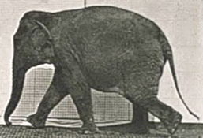

1 Oct 2021, 1220 Baldwin 755
pandoc -c ~/basic.css -s --toc 01deleteMe.md --bibliography 01deleteMe.bib --citeproc -o 01deleteMe.htmlIn his 2019 Tony acceptance speech, the then 73-year-old inspired viewers with his acceptance speech, where he laid out his cardinal rules for success: “Surround yourself with people whose eyes light up when they see you coming,” and, “Slowly is the fastest way to get to where you want to be.”
–André De Shields (NPR 2021)

(Muybridge 1884-1887)
I was hoping you could give the students a brief intro to yourself and your career path, what courses you teach at UC, and the practice of architecture and how the students will encounter it in their AE major at UC.
I am an associate professor with tenure and the assistant department head in the Civil and Architectural Engineering and Construction Management (CAECM) department in the College of Engineering and Applied Science (CEAS) at the University of Cincinnati. I received a BS Environmental Design and Bachelor of Architecture from Ball State University in 1988 and MBA from the University of Cincinnati in 1996. I am a registered architect in the State of Ohio.
My interests include design communications media, architectural history and design, building information modeling and real estate development and finance. You will see me again for Architectural Skills 1 AE1011 in January. I am currently on sabbatical and writing a textbook for you entitled, Contemporary Practices in Architectural Drawing and Illustration from Cognella Academic Publishing. (Inglert 2022)
| Number | Name | Semester |
|---|---|---|
| AE1011 | Architectural Skills 1 | Spr 2022 |
| AE1012 | Architectural Skills 2 | Fall 2022 |
| ARCH4005 | Architectural Studio 2 | Fall 2025 |
Architectural Engineering-Class of 2026
Architecture is the art and science of designing buildings and the space within and the site around them, in a manner that protects the public health, safety, and welfare. It includes providing or offering to provide planning services; developing concepts; preparing documents that define form and function; coordinating consultants; and construction administration. The Ohio Architects Board protects the health, safety, & welfare of the public through the licensure of architects and enforcement of the Board’s laws governing architecture. (Ohio 2021)
(Sotheby’s 2017)
Architectural engineering is the application of engineering principles and technology to building design and construction. Architectural engineers work together with architects and civil engineers but are unique in both their skills and role as part of the building design team. (Civil Engineers 2021)
{kind=link}